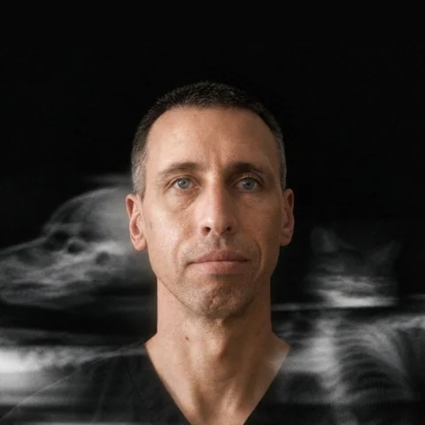
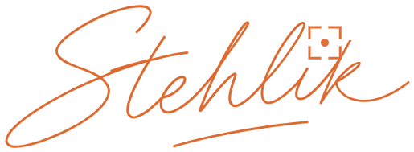

01 · Teleradiologie
Popisy RTG a CT na dálku
Popíšu snímky z vaší kliniky česky nebo slovensky. Zpráva odpovídá na otázku ze žádanky a k popisu mi můžete zavolat.
Snímek, žádanka, zpráva. Pak se doptáte.
Kliniku jednou zaregistrujete a dostanete přístup k žádance a ceníku.
Snímky pošlete přes PACS, k nim žádanku s klinickou otázkou.
Hotovou zprávu dostanete odkazem e-mailem.
Struktura podle konsenzu ACVR a ECVDI. Odpovídá na vaši otázku.
Radiolog a praktik jsou tým
„Čím přesnější informace radiolog dostane, tím kvalitnější bude výstup. A čím přehledněji radiolog zprávu napíše, tím lépe se podle ní rozhoduje.“Laco Stehlík, Zobrazkár
Takhle ne: „k dalšímu posouzení doporučujeme zvážit další diagnostiku“
Něco nesedí? Zavolejte mi, číslo je v patě každé zprávy.
Dvě služby. Jeden radiolog.
Popíšu snímky z vaší kliniky česky nebo slovensky. Zpráva odpovídá na otázku ze žádanky a k popisu mi můžete zavolat.
Zobrazovací metody prakticky, přímo u vás na klinice. Za sebou mám 65 workshopů v ČR a SR.
Newsletter a blog o zobrazovacích metodách pro lékaře a sestry. K tomu e-book o artefaktech v ultrazvuku.
[Běžná a akutní lhůta, doplní Laco.]
[Cena a co v ní je: doptání, víc projekcí, víkend. Doplní Laco.]
[Zástup a dovolená, doplní Laco.]
Ano. Číslo je v patě každé zprávy. Popis spolu projdeme česky nebo slovensky.
Klinice, ne majiteli zvířete. [ověří Laco]
MVDr. a Ph.D. jsem získal na VFU Brno. Sedmnáct let jsem působil na Oddělení zobrazovacích metod Kliniky chorob psů a koček VETUNI Brno, kde jsem učil radiologii, ultrazvuk a CT. Stážoval jsem u prof. Massima Vignoliho (Dip. ECVDI).
Pošlete mi první snímek. Pak mi zavolejte.
E-mail: laco@radiovet.cz
Popisuji pro kliniky v Česku a na Slovensku.

